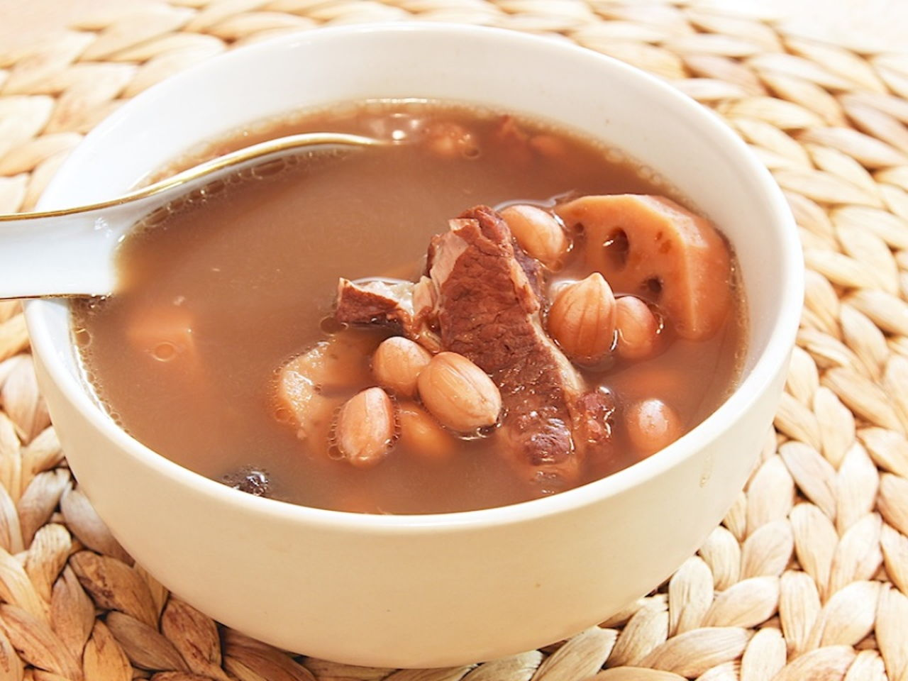

Lotus Root Soup
Lotus Root Soup

Description
A childhood favorite of mine. Anytime my mother cooks, I would request for this soup!
Very delicious and healthy!
Ingredients
- 1 lotus root, thinly sliced
- 1 pig tail bone(approx $4.50 worth)
- 1 handful of peanuts
- 2 pcs big red dates, seeds removed
Steps
- Soak the peanuts in a bowl of hot water and remove the skin.
- Rub some salt to pig tail bone and wash under running water.
- Put the tail bone into a pot of boiling water.
- Remove when it is partially cook. Set aside.
- Pour ½ a pot of boiling water into the slow cooker.
- Cook the lotus roots till it is boiling.
- Place the skinless peanuts, red dates and tail bone into the boiling soup.
- Slow cook for about 2 hours.
- Ready to serve.